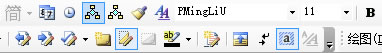

今天也有新的收穫，就是如何為WORD中的文字注音。有這個需求的原因，是因為我要為一篇文章「ハチの話」注音。
位於：格式 - 中文版式 - 拼音指南下的Office Word自帶的拼音指南｢簡體中文版｣是一個很好用的東西。他可以注音簡體中文，繁體中文和日文。
但有一個雞肋的地方。就是，Word為每一次注音的漢字數目加了限制，而且也沒有簡單的取消注音的方法。所以，我果斷Google了一波，查到了一些文章：
word录制宏为整篇word文档加拼音标注的方法
Word自定义宏实现全文拼音标注
ルビをカタカナでつける方法
很多人都提到了使用Word中的macro｢宏｣，當然我的第一想法也是這樣。具體的編程思路在這裡就不多說了，那些文章中都有詳細的介紹。我就談談自己遇到的問題吧。
這個問題的關鍵就在於FormatPhoneticGuide這個原裝macro，系統自帶的宏定義。用
Application.Run MacroName:="FormatPhoneticGuide"
這一條代碼就可以調用注音的macro，輕鬆實現注音功能。再加上
SendKeys "{enter}", True
幫助我們按下確定鍵。這樣，就可以輕鬆的實現自動添加注音。
一切似乎都是那麼的完美。但是問題來了，SendKeys "{enter}", True 遇到了權限問題，具體的原因我並不清楚，估計和WIN8.1作業系統有關。
我在網路上並沒有找到直接的解決方案，不過，找到了一個勉強算是可以的方法
Dim myKey As Object
Set myKey = CreateObject("WScript.Shell")
這樣，我們就可以用
myKey.SendKeys "{enter}", True
來幫助我們按下確定鍵了
可笑的是，這居然是我用｢百度知道｣這個邪惡的平台找到的代碼。
這行代碼具體是怎麼工作的，有興趣可以查一下VB VBS VBA的代碼，也許過了一段時間後，我會開始學習這些語言，到那個時候，再給大家講解吧。
最後附上我的源代碼和一張我的工作空間的截圖。
取消選擇的字元的注音
Sub Clear_Pronunciation() TextLength = Selection.Characters.Count For i = 0 To TextLength With Selection .Range.PhoneticGuide Text:="", Alignment:=wdPhoneticGuideAlignmentOneTwoOne, Raise:=11, FontSize:=8, FontName:="MS Gothic" End With Selection.MoveRight Unit:=wdCharacter, Count:=1 Next End Sub
為選擇的字元添加注音
注意，還是不能一次為太多的字元注音，這個macro僅僅只是減輕了我點菜單和確定的工作量
Sub Add_Pronunciation()
Dim myKey As Object
Set myKey = CreateObject("WScript.Shell")
myKey.SendKeys "{enter}", True
WordBasic.FormatPhoneticGuide
End Sub
